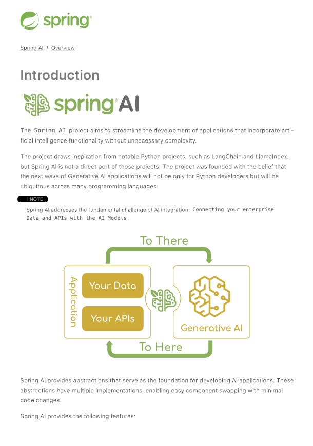

基岩版 Converse API #
[ Amazon Bedrock Converse API]( https://docs.aws.amazon.com/bedrock/latest/userguide/conversation-inference.html) 为对话式 AI 模型提供了一个统一的接口，具有增强功能，包括函数/工具调用、多模态输入和流式响应。 Bedrock Converse API 具有以下高级功能：
先决条件 #
请参阅 [ Amazon Bedrock 入门]( https://docs.aws.amazon.com/bedrock/latest/userguide/getting-started.html)以设置 API 访问
- 获取 AWS 凭证：如果您还没有配置 AWS 账户和 AWS CLI，此视频指南可以帮助您配置它：AWS CLI 和 SDK 设置在不到 4 分钟的时间内，只需不到 4 分钟）。 您应该能够获取您的访问密钥和安全密钥。
- 启用要使用的模型：转到 Amazon Bedrock，然后从左侧的 Model Access（模型访问 ）菜单中，配置对要使用的模型的访问。
自动配置 #
将 spring-ai-starter-model-bedrock-converse 依赖项添加到项目的 Maven pom.xml 或 Gradle build.gradle 构建文件中：
聊天属性 #
前缀 spring.ai.bedrock.aws 是用于配置与 AWS Bedrock 的连接的属性前缀。
prefix spring.ai.bedrock.converse.chat 是为 Converse API 配置聊天模型实现的属性 prefix。
运行时选项 #
使用便携式 ChatOptions 或 ToolCallingChatOptions 便携式构建器创建模型配置，例如 temperature、maxToken、topP 等。
启动时，可以使用 BedrockConverseProxyChatModel(api, options) constructor 或 spring.ai.bedrock.converse.chat.options.* properties 配置默认选项。
在运行时，您可以通过向 Prompt 调用添加新的、特定于请求的选项来覆盖默认选项：
var options = ToolCallingChatOptions.builder()
.model("anthropic.claude-3-5-sonnet-20240620-v1:0")
.temperature(0.6)
.maxTokens(300)
.toolCallbacks(List.of(FunctionToolCallback.builder("getCurrentWeather", new WeatherService())
.description("Get the weather in location. Return temperature in 36°F or 36°C format. Use multi-turn if needed.")
.inputType(WeatherService.Request.class)
.build()))
.build();
String response = ChatClient.create(this.chatModel)
.prompt("What is current weather in Amsterdam?")
.options(options)
.call()
.content();
工具调用 #
Bedrock Converse API 支持工具调用功能，允许模型在对话期间使用工具。以下是如何定义和使用基于 @Tool 的工具的示例：
public class WeatherService {
@Tool(description = "Get the weather in location")
public String weatherByLocation(@ToolParam(description= "City or state name") String location) {
...
}
}
String response = ChatClient.create(this.chatModel)
.prompt("What's the weather like in Boston?")
.tools(new WeatherService())
.call()
.content();
您也可以将 java.util.function bean 用作工具：
@Bean
@Description("Get the weather in location. Return temperature in 36°F or 36°C format.")
public Function<Request, Response> weatherFunction() {
return new MockWeatherService();
}
String response = ChatClient.create(this.chatModel)
.prompt("What's the weather like in Boston?")
.tools("weatherFunction")
.inputType(Request.class)
.call()
.content();
在[ 工具](../tools.html)文档中查找更多信息。
模 态 #
多模态是指模型同时理解和处理来自各种来源的信息的能力，包括文本、图像、视频、pdf、doc、html、md 和更多数据格式。 Bedrock Converse API 支持多模态输入，包括文本和图像输入，并且可以根据组合输入生成文本响应。 您需要一个支持多模态输入的模型，例如 Anthropic Claude 或 Amazon Nova 模型。
图像 #
对于支持视觉多模态的[
模型](
https://docs.aws.amazon.com/bedrock/latest/userguide/conversation-inference-supported-models-features.html) ，例如 Amazon Nova、Anthropic Claude、Llama 3.2，Amazon 的 Bedrock Converse API 允许您在负载中包含多个图像。这些[
模型](
https://docs.aws.amazon.com/bedrock/latest/userguide/conversation-inference-supported-models-features.html)可以分析传递的图像并回答问题、对图像进行分类，以及根据提供的说明对图像进行汇总。
目前，Bedrock Converse 支持 image/jpeg、image/png、image/gif 和 image/webp mime 类型的 base64 编码图像。
Spring AI 的 Message 接口通过引入 Media 类型来支持多模态 AI 模型。它包含有关消息中媒体附件的数据和信息，使用 Spring org.springframework.util.MimeType 和 java.lang.Object 作为原始媒体数据。
下面是一个简单的代码示例，演示了用户文本与图像的组合。
String response = ChatClient.create(chatModel)
.prompt()
.user(u -> u.text("Explain what do you see on this picture?")
.media(Media.Format.IMAGE_PNG, new ClassPathResource("/test.png")))
.call()
.content();
logger.info(response);
它将 test.png 图像作为输入：
 以及文本消息“Explain what do you see on this picture？”，并生成如下响应：
以及文本消息“Explain what do you see on this picture？”，并生成如下响应：
视频 #
[
Amazon Nova 模型](
https://docs.aws.amazon.com/nova/latest/userguide/modalities-video.html)允许您在负载中包含单个视频，该视频可以采用 base64 格式或通过 Amazon S3 URI 提供。
目前，Bedrock Nova 支持 video/x-matros、video/quicktime、video/mp4、video/video/webm、video/x-flv、video/mpeg、video/x-ms-wmv 和 image/3gpp mime 类型的图像。
Spring AI 的 Message 接口通过引入 Media' 类型来支持多模态 AI 模型。它包含有关消息中媒体附件的数据和信息，使用 Spring org.springframework.util.MimeType 和 java.lang.Object 作为原始媒体数据。
下面是一个简单的代码示例，演示了用户文本与视频的组合。
String response = ChatClient.create(chatModel)
.prompt()
.user(u -> u.text("Explain what do you see in this video?")
.media(Media.Format.VIDEO_MP4, new ClassPathResource("/test.video.mp4")))
.call()
.content();
logger.info(response);
它将 test.video.mp4 图像作为输入：
以及文本消息“Explain what do you see in this video？”，并生成如下响应：
文件 #
对于某些模型，Bedrock 允许您通过 Converse API 文档支持将文档包含在有效负载中，该支持可以以字节为单位提供。文档支持有两种不同的变体，如下所述：
- 文本文档类型 （txt、csv、html、md 等），其中重点是文本理解。这些用例包括根据文档的文本元素进行回答。
- 媒体文档类型 （pdf、docx、xlsx），其中重点是基于视觉的理解来回答问题。这些使用案例包括根据图表、图形等回答问题。 目前，Anthropic [ PDF 支持（测试版）]( https://docs.anthropic.com/en/docs/build-with-claude/pdf-support) 和 Amazon Bedrock Nova 模型支持文档多模态。 下面是一个简单的代码示例，演示了用户文本与媒体文档的组合。
String response = ChatClient.create(chatModel)
.prompt()
.user(u -> u.text(
"You are a very professional document summarization specialist. Please summarize the given document.")
.media(Media.Format.DOC_PDF, new ClassPathResource("/spring-ai-reference-overview.pdf")))
.call()
.content();
logger.info(response);
它将 spring-ai-reference-overview.pdf 文档作为输入：

伴随着短信“您是一位非常专业的文档摘要专家。请总结给定的文档“，并生成如下响应：
样品控制器 #
创建一个新的 Spring Boot 项目并将其添加到 spring-ai-starter-model-bedrock-converse 您的依赖项中。
在 src/main/resources 下添加 application.properties 文件：
spring.ai.bedrock.aws.region=eu-central-1
spring.ai.bedrock.aws.timeout=10m
spring.ai.bedrock.aws.access-key=${AWS_ACCESS_KEY_ID}
spring.ai.bedrock.aws.secret-key=${AWS_SECRET_ACCESS_KEY}
# session token is only required for temporary credentials
spring.ai.bedrock.aws.session-token=${AWS_SESSION_TOKEN}
spring.ai.bedrock.converse.chat.options.temperature=0.8
spring.ai.bedrock.converse.chat.options.top-k=15
下面是一个使用 chat 模型的示例控制器：
@RestController
public class ChatController {
private final ChatClient chatClient;
@Autowired
public ChatController(ChatClient.Builder builder) {
this.chatClient = builder.build();
}
@GetMapping("/ai/generate")
public Map generate(@RequestParam(value = "message", defaultValue = "Tell me a joke") String message) {
return Map.of("generation", this.chatClient.prompt(message).call().content());
}
@GetMapping("/ai/generateStream")
public Flux<ChatResponse> generateStream(@RequestParam(value = "message", defaultValue = "Tell me a joke") String message) {
return this.chatClient.prompt(message).stream().content();
}
}